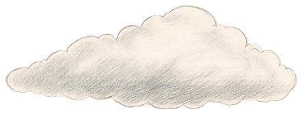
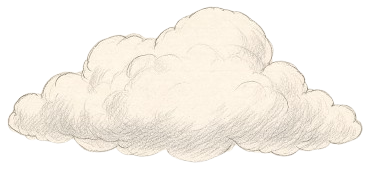
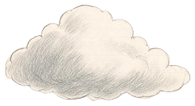
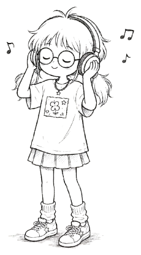
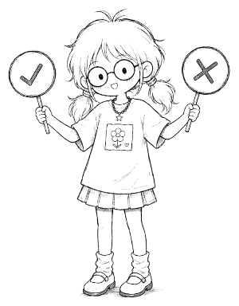
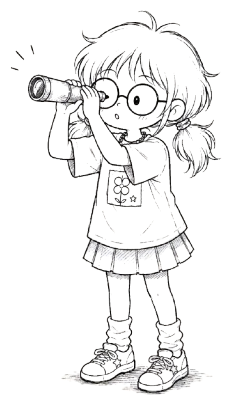
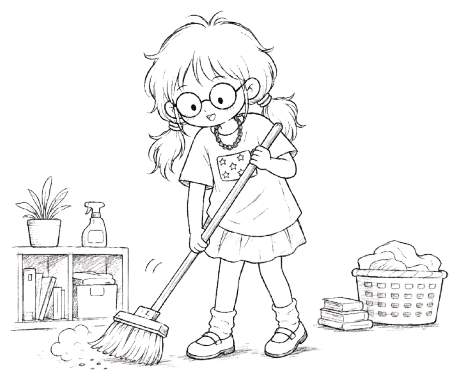

YouTube 爆款监测

简历修改网站

LockLock

Home
[ 异常事件记录 · 捕获信号 4 例 · 点击角色查看 ]
#2026-001 · 个人简历修改网站
新标签页 ↗
#2026-005 · YouTube 爆款监测系统
新标签页 ↗
#2026-004 · LockLock
新标签页 ↗
编号
#2026-004
名称
LockLock（锁屏单词 + 待办）
状态
内容待补充
内容待补充 —— 锁屏浮现单词与待办气泡的产品，占位窗口，等文案到位后替换。
#2026-006 · Home
新标签页 ↗
编号
#2026-006
名称
Home（房间物品清单 + 出行 SOP）
状态
内容待补充
内容待补充 —— 房间物品清单与出行 SOP 产品，占位窗口，等文案到位后替换。
存在体概况
异常事件记录
信号追踪
接触协议